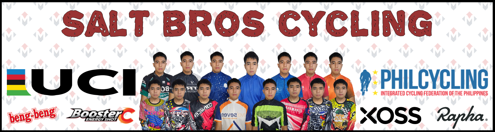

Two Wheels, One Soul
Freedom on every pedal stroke
Freedom on every pedal stroke
|  |
|---|
| Cycling is a versatile and sustainable activity with a wide range of objectives that can benefit individuals and communities alike. The objectives of cycling can vary depending on the context—whether it's for recreation, fitness, transportation, or sport. Below are some of the key objectives of cycling: Health and Fitness: One of the primary objectives of cycling is to promote physical health. Cycling is an excellent cardiovascular exercise that improves endurance, strengthens muscles, and helps maintain a healthy weight. It can reduce the risk of chronic conditions such as heart disease, diabetes, and hypertension. Additionally, cycling is a low-impact activity, making it accessible for people of various ages and fitness levels. Environmental Sustainability: Cycling is an eco-friendly mode of transportation that helps reduce carbon emissions and reliance on fossil fuels. By choosing to cycle instead of driving, individuals can contribute to reducing air pollution, lowering their carbon footprint, and promoting a cleaner, healthier environment. Economic Benefits: Cycling can be a cost-effective mode of transportation. It reduces the need for fuel, parking fees, and public transportation costs. On a larger scale, cycling infrastructure such as bike lanes and bike-sharing systems can boost local economies by increasing access to businesses and tourism. Convenience and Accessibility: Cycling is a flexible and efficient mode of transport, particularly in urban areas. It allows individuals to navigate through traffic more easily, reach destinations faster, and access areas that may be less accessible by car or public transpoart. It also contributes to reducing congestion on busy roads. Mental Well-being: Cycling provides psychological benefits as well. It is a great way to relieve stress, improve mood, and boost mental health. Engaging in outdoor cycling offers a sense of freedom, enhances mindfulness, and provides opportunities for social interaction and community building. Sport and Recreation: For many, cycling is an enjoyable recreational activity or competitive sport. Whether as a casual hobby or as part of professional competition, cycling offers various avenues for people to engage in personal challenges, outdoor exploration, and competitive events such as road races, mountain biking, and track cycling. Social and Community Engagement: Cycling fosters a sense of community and social interaction. It can bring people together through cycling clubs, group rides, or events such as charity rides. These activities strengthen social bonds and encourage a sense of belonging among participants. In summary, cycling serves multiple objectives that enhance individual well-being, contribute to environmental sustainability, and promote social and economic benefits. Whether as a form of exercise, a mode of transport, or a recreational pursuit, cycling offers valuable opportunities for personal and societal development. |